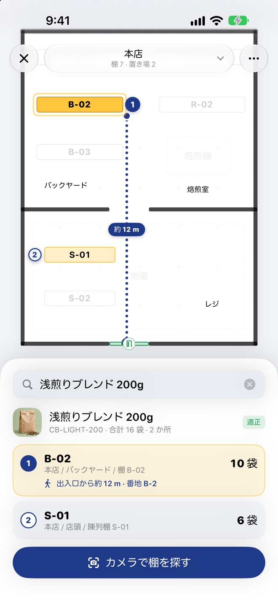

1.3 の新機能
あの商品はどの棚？
あの商品はどの棚？
地図がすぐ答える
お店や倉庫の見取り図に棚を並べ、棚番を付けておくと、探している商品のある棚に番号が付き、入口から棚までの道順と距離を表示します。専用の機器は要りません。
- 在庫切れ・空き棚・期限間近の棚だけを色で絞り込み
- 棚の QR ラベルを印刷して貼れば、カメラを向けて目当ての棚を探せます
- 棚の QR → 商品のバーコードの順に読むだけで、置き場所を登録
